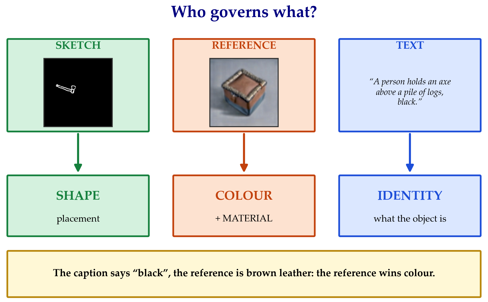
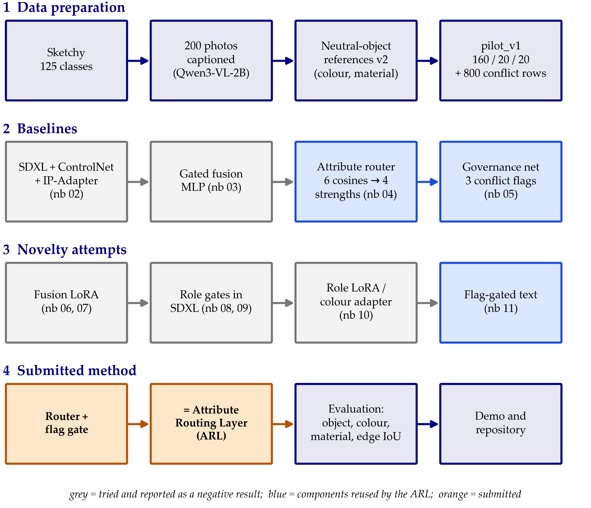
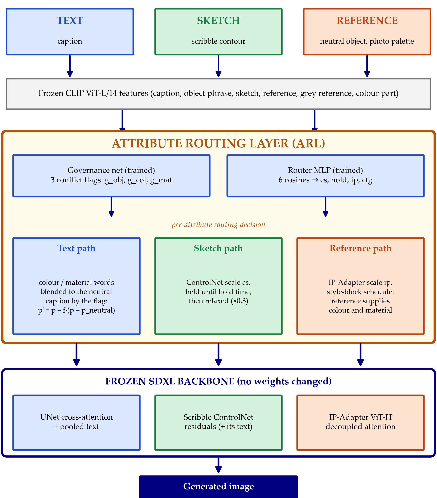
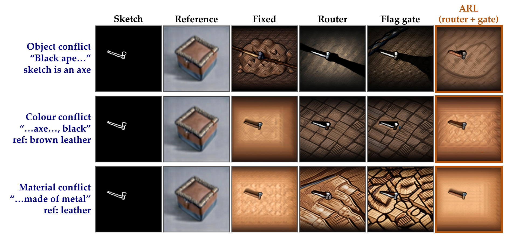

Abstract
Multimodal diffusion models combine different conditioning signals, but conflicting instructions can cause one modality to override information from another. This project investigates attribute-level control in multimodal image generation, assigning distinct roles to text (object identity), sketches (geometry) and reference images (colour and material). We develop an Attribute Routing Layer (ARL), integrating a learned conflict-detection network, a conditioning-strength router and flag-gated text adjustments with a frozen SDXL, ControlNet and IP-Adapter pipeline, and test it on object, colour, material and swapped-reference conflicts built from Sketchy. Preliminary pilot results (one held-out photo, three conflict rows) show improved reference-attribute compliance (reference colour reached in 3 of 3 rows vs 1 of 3 for the fixed baseline), but also reveal trade-offs in sketch fidelity (edge IoU 0.059 vs 0.378) and unresolved object-identity conflicts. Our findings highlight the limitations of global conditioning adjustments and the challenges of achieving reliable attribute-specific control in diffusion models.
Introduction
- Multimodal generators take text, sketch and reference together; when they conflict (caption says black, reference is brown leather) the strongest pathway silently wins.
- A reference image also carries its own object shape, so turning it up leaks the wrong identity.
- Giving each modality one attribute makes conflicts well-posed and measurable per attribute.
- Deep learning is needed because the conflict is semantic: colour, material and identity must be compared in a learned embedding space.

Figure 1: Who governs what. Where inputs conflict, the reference wins colour.
We outline our major contributions below:
- A per-attribute governing rule for text, sketch and reference, with labelled object, colour, material and swapped-reference conflict rows built on Sketchy.
- The Attribute Routing Layer: a trained governance network (conflict flags) and a trained router (strengths), driving flag-gated text on frozen SDXL. No diffusion weights are changed; it runs on a free Colab T4.
- An attribute-wise evaluation and a documented set of negative results (LoRA, role gates, colour adapter) that explain why this design was chosen.
Workflow
Figure 2 illustrates the workflow, from data preparation through the baselines and failed attempts to the submitted ARL.

Figure 2: Overall workflow.
Methodology
Figure 3 (next column) illustrates the architecture. The three inputs are encoded with frozen CLIP ViT-L/14. Two small trained networks estimate attribute-conflict flags and global conditioning parameters, which steer the conditioning of a frozen SDXL pipeline; no diffusion weights are trained.
- Governance network. Six CLIP slots (caption, object phrase, sketch, reference, grey reference, colour part) → shared projection + slot embeddings + 15 pairwise cosines → MLP → conflict flags gobj, gcol, gmat. Trained with weighted BCE on rule-generated labels (no generated-image supervision) and Platt-calibrated on validation photos.
- Router. Six CLIP cosines → MLP (32-32-4, sigmoid) → four global parameters: ControlNet scale cs [0.5, 1.4], sketch hold time [0.4, 1.0], IP-Adapter scale ip [0.2, 0.8], CFG [4, 10]. Five-fold ensemble trained on a one-factor-at-a-time grid (9 generated variants per training item).
- Flag-gated text. Colour words → “colored”, material words → “solid”. The text embedding becomes p′ = p − f·(p − pneutral), with f the colour or material flag. Applied to UNet text, ControlNet text and the pooled embedding, which closes the leak where the caption's colour still reached the UNet through ControlNet.
- Backbone and schedule. Frozen SDXL, scribble ControlNet and IP-Adapter ViT-H. The sketch is held, then relaxed (×0.3); the reference enters through the style block only. 512 px, 20 steps, about 7 s per image and 10 GB on a T4.
Dataset Details
Built on the Sketchy database (125 classes, 12,500 photos, 75,481 sketch–photo pairs). We use 200 captioned photos, one object each.
| Property | Value |
|---|
| Photos used | 200 (train 160, val 20, test 20; split by photo) |
| Sketch, caption | one human sketch per photo; captions generated by prompting Qwen3-VL-2B-Instruct with each photo and its Sketchy class as a hint |
| Reference | neutral object (vase, mug, ball, bottle, box) carrying the photo's colour, material, finish; segmented on grey |
| Conflict rows | +800: object, colour, material, swapped reference |
Table 1: Dataset characteristics.

Figure 3: Overall architecture: the ARL routes each attribute to one pathway of frozen SDXL.
Novelty Assessment
| Approach | Observation |
|---|
| Fixed / scheduled, learned router | reference copies its own object (DINO to reference 0.673 vs 0.105 to target); router beats a constant on 1 of 4 outputs and is blind to colour and material |
| Governance network | detects conflicts: colour 0.755 (old 0.540), material 0.940 (old 0.643); images alone barely changed |
| Fusion LoRA on UNet | object conflicts 8/8 (vs 2/8), but edge IoU fell 0.369 → 0.230 |
| Role gates in SDXL | no gate moved more than 0.06 from its start; colour followed the text |
| Neutral caption + IP scale 1.0 (12 test photos) | object 0.10 → 0.30, edge IoU 0.213 → 0.376; colour 0.70 and material 0.67 unchanged; swapped reference 0.70 → 0.00 |
| ARL = router + flag gate (submitted) | reference colour reached on 3/3 pilot rows; sketch fidelity drops (Table 3). Routing the text path, incl. ControlNet's, is what lets the reference win colour |
Table 2: Experiments run for novelty assessment.
Results
Pilot: held-out photo 0027, three conflict rows, six arms, same seed. Hit = output colour or material matches the reference.
| Method | Colour hit | Material hit | Edge IoU | DINO-ref | CLIP-T |
|---|
| Fixed baseline | 0.33 | 0.67 | 0.378 | 0.291 | 0.205 |
| Schedule only (control) | 1.00 | 0.00 | 0.066 | 0.122 | 0.233 |
| Router | 1.00 | 0.33 | 0.044 | 0.147 | 0.249 |
| Flag gate | 0.33 | 0.33 | 0.370 | 0.252 | 0.210 |
| Flags forced to 1 (control) | 0.67 | 1.00 | 0.277 | 0.249 | 0.212 |
| ARL (router + flag gate) | 1.00 | 0.67 | 0.059 | 0.159 | 0.247 |
Table 3: Mean over the 3 pilot rows (n = 3 images per arm; indicative only).

Figure 5: Pilot outputs. The ARL column follows the reference's brown leather in all three rows and keeps a small axe; no arm produces the caption's ape (object conflict unresolved).
The ARL keeps reference colour in 3 of 3 rows and material in 2 of 3; the schedule-only control matches the colour score, so most of that gain is the schedule. The cost is sketch fidelity (edge IoU 0.06 vs 0.38).
Conclusion
- Explicit roles (text = identity, sketch = shape, reference = colour + material) make conflicts well-defined and measurable.
- The ARL (two small trained networks + flag-gated text on frozen SDXL) lets the reference win colour on the pilot; the cost is sketch fidelity, and object conflicts stay unresolved.
Future work (improving the architecture):
- Attribute-specific routing: replace the four global scalars by independent, attribute-aware routing decisions, so identity, geometry, colour and material are controlled separately.
- Disentangled reference conditioning: build reference representations that keep colour and material but suppress object identity and shape, which removes the reference-object leakage.
- Spatially-aware conditioning: region-level masks and spatially adaptive gates change a conflicting attribute locally, so sketch-defined geometry (edge IoU) is not disrupted.
References
- Dustin Podell, Zion English, Kyle Lacey, Andreas Blattmann, Tim Dockhorn, Jonas Müller, Joe Penna and Robin Rombach. SDXL: Improving Latent Diffusion Models for High-Resolution Image Synthesis, International Conference on Learning Representations (ICLR), 2024. https://arxiv.org/abs/2307.01952
- Lvmin Zhang, Anyi Rao and Maneesh Agrawala. Adding Conditional Control to Text-to-Image Diffusion Models, IEEE/CVF International Conference on Computer Vision (ICCV), 2023. https://arxiv.org/abs/2302.05543
- Hu Ye, Jun Zhang, Sibo Liu, Xiao Han and Wei Yang. IP-Adapter: Text Compatible Image Prompt Adapter for Text-to-Image Diffusion Models, arXiv preprint arXiv:2308.06721, 2023. https://arxiv.org/abs/2308.06721
- Patsorn Sangkloy, Nathan Burnell, Cusuh Ham and James Hays. The Sketchy Database: Learning to Retrieve Badly Drawn Bunnies, ACM Transactions on Graphics, 2016. https://doi.org/10.1145/2897824.2925954
- Alec Radford, Jong Wook Kim, Chris Hallacy, Aditya Ramesh, Gabriel Goh, Sandhini Agarwal, Girish Sastry, Amanda Askell, Pamela Mishkin, Jack Clark, Gretchen Krueger and Ilya Sutskever. Learning Transferable Visual Models From Natural Language Supervision, International Conference on Machine Learning (ICML), 2021. https://arxiv.org/abs/2103.00020
Acknowledgments
We thank the IE 643 instructor and teaching assistants for their guidance.
Github Link and Demo Video Link
Github Repository
github.com/Harshitha-282007/constraint-driven-multimodal-diffusion
Demo Video Link
Demo video (Google Drive folder)